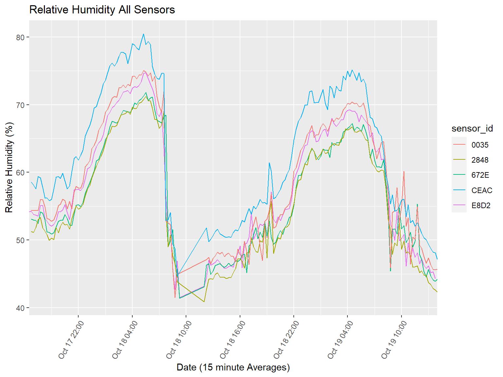

Experiment Location: The University of Arizona, Tucson, Controlled Environment Agriculture Center, Greenhouse “C”
Four experimental BME280 temperature, humidity, pressure aspirated sensors (THP sensors) were placed adjacent to an existing CEAC Vaisala HMP60 aspirated sensor (CEAC sensor). The CEAC sensor had been recently calibrated before the test but on an unknown specific date. The THP sensors were covered with an expanded foam packaging packet that gave at least 2 inches of insulation on top as well as part way down the sides to shield them from direct sunlight. They were also painted white for use in the field. The THP sensors will be used in a shaded, outdoor conditions, not a greenhouse environment. This insulation reduces the direct sunlight and associated absorbed energy by the sensor case. The goal is to compare how well the THP sensors respond in relation to the CEAC sensor under the same conditions. This can then be used to create a calibration equation for each of the four THP sensors.
The THP sensors had aspirated readings taken from a Hiletgo BME280 breakout board inside an aspiration chamber. Specifications for the BME280 sensor can be found here: http://www.hiletgo.com/ProductDetail/1953483.html. Measurements were recorded for Temperature (C), Relative Humidity (%), and Pressure (hPa) at 15 minute intervals of 00,15,30,45 of each hour. Each THP sensor reading had a variable amount of seconds past the boundary due to reading processing timing that did not affect reading accuracy. The CEAC data was supplied with all seconds set to zero.
Readings were taken every 15,000 ms (15 seconds) and averaged over 15 minutes. That value was then assembled into a CSV data record that was transmitted to a data logger and recorded to a microSD card. These four CSV log files were collected for this analysis.
The CEAC supplied a Microsoft Excel (XLSX) file with the CEAC sensor data for this analysis.
SOFTWARE
RStudio
RStudio 2023.12.0+369 “Ocean Storm” Release (33206f75bd14d07d84753f965eaa24756eda97b7, 2023-12-17) for windows Mozilla/5.0 (Windows NT 10.0; Win64; x64) AppleWebKit/537.36 (KHTML, like Gecko) RStudio/2023.12.0+369 Chrome/116.0.5845.190 Electron/26.2.4 Safari/537.36
R
[64-bit] R-4.2.2
COMPUTER
Processor Intel(R) Core(TM) i9-10885H CPU @ 2.40GHz 2.40 GHz Installed RAM 32.0 GB (31.7 GB usable) System type 64-bit operating system
OS
Edition Windows 10 Pro Version 22H2 Installed on 9/11/2021 OS build 19045.4046 Experience Windows Feature Experience Pack 1000.19053.1000.0
Location Within Greenhouse
Lowest CEAC Sensor Above an Existing Experiments Drainage Tray at Approximately 3 feet (~1 m) From the Ground Midpoint in The North/South Direction One Quarter of The Width From The West Side
Load Data
THP Sensors
Each sensors .log file had previously recorded data at the top of the file. These lines were skipped up to the first record of this test data. Record numbering in this data starts at 1.
The THP sensors recorded invalid values as native “na” values for use with R.
Date/Time values start on 2023-10-17 at 16:15:xx or 16:30:xx with the start time variation due to differing sensor start up times.
Code
# reads in the THP sensor log file with correct field names and typesload_THP_data <-function(f_name, line_skip=0) { df_name <-read_csv(f_name,skip = line_skip,col_names =c("date", # logger date/time log_date"record_number","sensor_date", # sensor date/time date"mac", # MAC address of the sensor"temperature","rh","pressure","read_count"),col_types =cols(date =col_datetime(format ="%Y-%m-%d %H:%M:%S"), record_number =col_integer(),sensor_date =col_datetime(format ="%Y-%m-%d %H:%M:%S"),mac =col_character(),temperature =col_double(),rh =col_double(),pressure =col_double(),read_count =col_integer()) )return(df_name)}# go to project directoryinvisible(here::here())# each log from each sensor from the test, name with last 4 characters of log nameTHP_log_E8D2 <-load_THP_data("raw_data/20231019_THP_TRC_last/CLIMATE_C45BBEE4FE08_48E72952E8D2.log", 7)THP_log_672E <-load_THP_data("raw_data/20231019_THP_TRC_last/CLIMATE_C45BBEE4FE08_48E72953672E.log", 4)THP_log_2848 <-load_THP_data("raw_data/20231019_THP_TRC_last/CLIMATE_C45BBEE4FE08_485519DF2848.log", 6)THP_log_0035 <-load_THP_data("raw_data/20231019_THP_TRC_last/CLIMATE_C45BBEE4FE08_C45BBEE50035.log", 5)
CEAC Campbell Scientific Data
An Excel XLSX file was supplied by the CEAC that contained data from the CEAC sensor. Raw data from 7/12/2023 14:15 through 11/2/2023 14:15 was included in the file.
Values of “NAN” and “-7999” in the data were mapped to native “na” values for use in R.
TIMESTAMP column name was changed to “date” to allow for matching with the THP sensor data. It was also converted to a standard POSIXct date/time format.
The first 4 rows were removed as they are Campbell Scientific header information that is not needed. It’s log file starts with record number 0.
All dates are standardized to POSIXct. YYYY-MM-DD HH:MM:SS
There was a difference in the clock values between the THP sensors and CEAC sensor. The clocks were not synchronized at the beginning of the test. Through trial and error it was determined that the difference was ~30 minutes. This is consistent with previous tests at this location. A 30 minute shift was applied to the THP sensor data to align it with the CEAC sensor data.
The THP sensor was set to record on 15 minute boundaries but had records where the expected value was past a time boundary. This was sporadic and appeared to have cycles of time jumps forward by one 15 minute boundary, and then would correct itself. This caused some duplication of the dates/times. These were averaged together in the THP data to normalize it to 15 minute boundaries.
The Cambpell Scientific logs rounded the TIMESTAMP (date fields) to the minute, so the THP sensor data had the seconds set to 0 values to match this format.
Code
combine_data <-function(sensor_df, sensor_name) {# set one log to temp for temporary testing of time averaging temp <- sensor_dfsecond(temp$date) <-0 temp$date <-as.POSIXct(floor(((as.numeric(temp$date)) + (30*60))), origin ="1970-01-01")# combine experimental sensor data into 15 minute boundaries dur <-15*60 temp$new_date <-as.POSIXct(floor(as.numeric(temp$date) / (dur))*(dur), origin ="1970-01-01")# add the time difference from the time the sensor sent the time the data logger recorded it# should be 0 to 1 second temp$diff <- temp$sensor_date - temp$date################ hourly <- temp# combine experimental sensor data into 60 minute boundaries# change number on left of * to minutes as needed 15, 30, ... hourly$date <-floor(((as.numeric(hourly$date)) -15*60 )/ (15*60)) * (15*60)# hourly$date <- floor(((as.numeric(hourly$date)) - 60*60 )/ (60*60)) * (60 * 60) hourly$date <-as.POSIXct(hourly$date, origin='1970-01-01') hourRH <-aggregate(rh ~ date, hourly, mean) hourT <-aggregate(temperature ~ date, hourly, mean) hourP <-aggregate(pressure ~ date, hourly, mean) hourStats <-inner_join(hourRH, hourT, by='date') hourStats <-inner_join(hourStats, hourP, by='date') hourStats$sensor_id <- sensor_name# create final table for analysis with CEAC and TRH sensor data finalStats <-inner_join(Campbell_Data, hourStats, by='date')###########return(finalStats)}
Clean logs were created for each the four THP sensor logs. These were then individually joined to the CEAC sensor data based on the date. This resulted in four merged logs of each THP sensor data and CEAC sensor data for analysis.
Code
# Data Frame Names# THP_log_E8D2# THP_log_672E# THP_log_2848# THP_log_0035# create the appropriate final logs and identify with a sensor_idfinal_THP_log_E8D2 <-combine_data(THP_log_E8D2, "E8D2")final_THP_log_672E <-combine_data(THP_log_672E, "672E")final_THP_log_2848 <-combine_data(THP_log_2848, "2848")final_THP_log_0035 <-combine_data(THP_log_0035, "0035")
RESULTS
NOTE Starting October 18th around 10:00 am there appears to be an anomaly with high temperatures and low humidity. This normally indicates failure of the wet pad cooling system where water is not flowing over the pad. The analysis was done including these values but decreased accuracy of the calibration model. I decided to keep only data points where relative humidity was > 45 %.
Outlier and/or leverage points are seen in the residual graphs. These deserve a closer look to see if those point should be removed from the data. This would improve the overall model.
All Temperature Sensors
Each of the four THP sensors and the CEAC sensor data are plotted together.
The four THP sensor labels are from the last four characters of the MAC address of each microprocessor in each THP sensor. This information is included in the data logs and can be used for future processing of the THP data.
Code
# TODO this goes above when the data is in final state# The readings were taken from `r min(finalStats$date)` to `r max(finalStats$date)`. Reading differences for the experimental sensor ranged from a minimum of `r round(min(finalStats$TEMPERATURE), digits = 2)` to a maximum of `r round(max(finalStats$TEMPERATURE), digits = 2)` degrees Celsius.\# The mean was `r round(mean(finalStats$TEMPERATURE), digits = 2)` degrees.# # Reading differences for the CEAC sensor ranged from a minimum of `r round(min(finalStats$TEMP_THREE_FOOT_HEIGHT), digits = 2)` to a maximum of `r round(max(finalStats$TEMP_THREE_FOOT_HEIGHT), digits = 2)` degrees Celsius.\# The mean was `r round(mean(finalStats$TEMP_THREE_FOOT_HEIGHT), digits = 2)` degrees.# final_THP_log_672E <- subset(final_THP_log_672E, RH_THREE_FOOT_HEIGHT>45.0 & rh>45.0) final_THP_log_E8D2 <-subset(final_THP_log_E8D2, rh>40.0) final_THP_log_672E <-subset(final_THP_log_672E, rh>40.0) final_THP_log_2848 <-subset(final_THP_log_2848, rh>40.0) final_THP_log_0035 <-subset(final_THP_log_0035, rh>40.0) T4 <-ggplot() +geom_line(data = final_THP_log_E8D2, aes(x = date, y = temperature, color = sensor_id)) +geom_line(data = final_THP_log_672E, aes(x = date, y = temperature, color = sensor_id)) +geom_line(data = final_THP_log_2848, aes(x = date, y = temperature, color = sensor_id)) +geom_line(data = final_THP_log_0035, aes(x = date, y = temperature, color = sensor_id)) +geom_line(data = final_THP_log_0035, aes(x = date, y = TEMP_THREE_FOOT_HEIGHT, color ="CEAC")) +ggtitle("Temperature") +xlab("Date (15 minute Averages)") +ylab("Temperature (C)") +scale_x_datetime(date_labels = ("%b %d %H:%M"),date_breaks ="6 hours", expand =expansion(0)) +theme(axis.text.x=element_text(angle=60, hjust=1))
All Relative Humidity Sensors
This graph contains all four THP sensors and the CEAC sensor data. It has data truncated to values > 45 % RH to remove the temperature anomaly. The THP sensors all appear to track the CEAC sensor reasonably well.
Code
# TODO move back up as text after data is finalized# The readings were taken from `r min(finalStats$date)` to `r max(finalStats$date)`. Readings from the experimental sensor ranged from a minimum of `r round(min(finalStats$RH), digits = 2)` to a maximum of `r round(max(finalStats$RH), digits = 2)` percent.\# The mean was `r round(mean(finalStats$RH), digits = 2)` percent.# # Reading for the CEAC sensor ranged from a minimum of `r round(min(finalStats$RH_THREE_FOOT_HEIGHT), digits = 2)` to a maximum of `r round(max(finalStats$RH_THREE_FOOT_HEIGHT), digits = 2)` percent.\# The mean was `r round(mean(finalStats$RH_THREE_FOOT_HEIGHT), digits = 2)` percent.ggplot() +geom_line(data = final_THP_log_E8D2, aes(x = date, y = rh, color = sensor_id)) +geom_line(data = final_THP_log_672E, aes(x = date, y = rh, color = sensor_id)) +geom_line(data = final_THP_log_2848, aes(x = date, y = rh, color = sensor_id)) +geom_line(data = final_THP_log_0035, aes(x = date, y = rh, color = sensor_id)) +geom_line(data = final_THP_log_0035, aes(x = date, y = RH_THREE_FOOT_HEIGHT, color ="CEAC")) +ggtitle("Relative Humidity All Sensors") +xlab("Date (15 minute Averages)") +ylab("Relative Humidity (%)") +scale_x_datetime(date_labels = ("%b %d %H:%M"),date_breaks ="6 hours", expand =expansion(0)) +theme(axis.text.x=element_text(angle=60, hjust=1))

LINEAR REGRESSION
A simple linear regression was performed to compare the CEAC sensor data to the THP sensor data. Graphs, output, and equations are shown below. Residuals assumptions for the linear regressions are also shown.
The sensor names are E8D2, 2848, 672E, 0035. Four graphs groups, one set for each THP sensor, are shown in 2x2 grids.
This sensor performed well with fitted residuals showing no recognizable pattern. The QQ plot is reasonable but does show a curve at the lower end. There are a few points that could be an outlier and/or leverage point that should be evaluated and causing this deviation.
This sensor performed the worst of the four THP sensors for RH. The residuals/fitted shows a vary large outlier/leverage point that needs further investigation. This may be skewing the QQ plot as well.
The data looks as though there are outlier/leverage points in the data. This data set needs re-evaluated to see if these points can be removed, which should improve the model performance and QQ plot.
This sensor appears to have outlier/leverage points that need evaluated. The residual plots do not show proper shapes and should improve with this evaluation.
This sensor performed well. There is some clustering in the Fitted residuals, and slightly high tail in the QQ plot. This model should suffice for this experiment.
Overall this model looks good. There may be a few data points that need re-evaluated. Most likely they are from the central peak, left edge discrepancies.
The calibration test show that all four THP sensors perform fairly well, with some of the deviation attributed to the original data anomaly of very (relative) higher temperatures and lower humidity. There was little data collected for this event compared to the rest of the expected data range. Dropping these unexpected values and keeping values > 45 % did help improve the models, but it may not have been the best judgement call.
As noted in many of the graphs possible outliers and/or leverage points appear. Another pass on the data with this analysis for each sensor needs to be added to see if any improvement can be made to the models. In addition, once this is added, the entire data set can be evaluated to see if the > 45 % RH decision was needed.
These sensors ran for several weeks in a greenhouse that had pesticides applied. The unknown chemicals may have also affected the accuracy of these sensors. There was a strong smell of sulfur on the sensors when they were retrieved at the completion of the experiment.